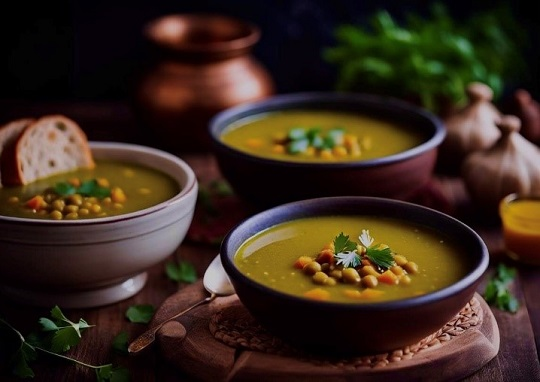

Découvrire les plats Emblématique du Nord du Maroc
Tanger : La perle du Nord du Maroc
Tanger est un carrefour de cultures et de saveurs qui se reflètent dans sa riche gastronomie. Connue pour ses plats emblématiques, la région offre une cuisine authentique et variée, influencée par la fraîcheur de la Méditerranée et les traditions séculaires du Rif et de ses environs, comme Larache, Tétouan, Assilah, etc. Parmi les saveurs connues dans Tanger et ses environs, on trouve la Bissara ou comme ils disent les Tangérois BAYSSAR, Taktouka Jabalia, Tagra ou Tajine au poisson, etc.
BISSARA : Soupe des petits pois
Dans le nord du Maroc, particulièrement dans les régions montagneuses et rurales, la bissara a émergé comme un pilier de l’alimentation quotidienne, surtout durant les mois d’hiver. Le climat plus frais du Rif, ainsi que la disponibilité des fèves et des pois cassés, a contribué à faire de la bissara une spécialité locale. L’ajout d’huile d’olive, produite en abondance dans ces régions, témoigne du lien profond entre ce plat et les produits locaux.
Historiquement, la bissara était le plat des classes populaires, consommée par les agriculteurs, les pêcheurs et les ouvriers pour son apport énergétique élevé. Simple à préparer, elle permettait d’alimenter toute une famille avec des ingrédients peu coûteux. Elle était souvent servie comme petit-déjeuner ou repas de midi, permettant de rester rassasié pendant une journée de travail.
Elle est aujourd’hui appréciée dans tout le pays, mais reste particulièrement associée au nord, Ce plat incarne une partie de l’identité culinaire du Maroc, témoignant de la capacité des Marocains à sublimer des ingrédients simples pour créer des mets riches en saveurs et en histoire.
Targa au tagine au poisson
Originaire des villes de Tanger et Tétouan, ainsi que des villages du nord-ouest du Maroc, la tagra est un plat emblématique de la région. Ce terme désigne également le plat ovale en terre cuite dans lequel le poisson est cuit au four.
Préparée avec des variétés de poissons comme les anchois et les sardines, la Tagra était à l'origine un repas de pêcheurs. Aujourd'hui, elle incarne une tradition culinaire typique de la côte nord marocaine, où la fraîcheur des ingrédients et la méthode de cuisson traditionnelle font toute la différence.
Plus qu’un simple plat, la tagra reflète le mode de vie des habitants du nord marocain, où la proximité de la mer joue un rôle central dans la culture et l’alimentation. Ce mets est souvent servi lors des repas familiaux ou des rassemblements accompagné de pain frais.
Aujourd’hui, la tagra continue de conquérir les cœurs grâce à sa simplicité et son authenticité. Elle incarne le lien profond entre la mer et les traditions culinaires du nord du Maroc, offrant une expérience gustative inoubliable et une fenêtre sur le riche patrimoine de cette région côtière.
Explorez la diversité des saveurs dans autres villes du Maroc
Fez, Marrakech, Oujda, Ouarzazate et Laayoune
Bon voyage à travers les saveurs du Maroc !